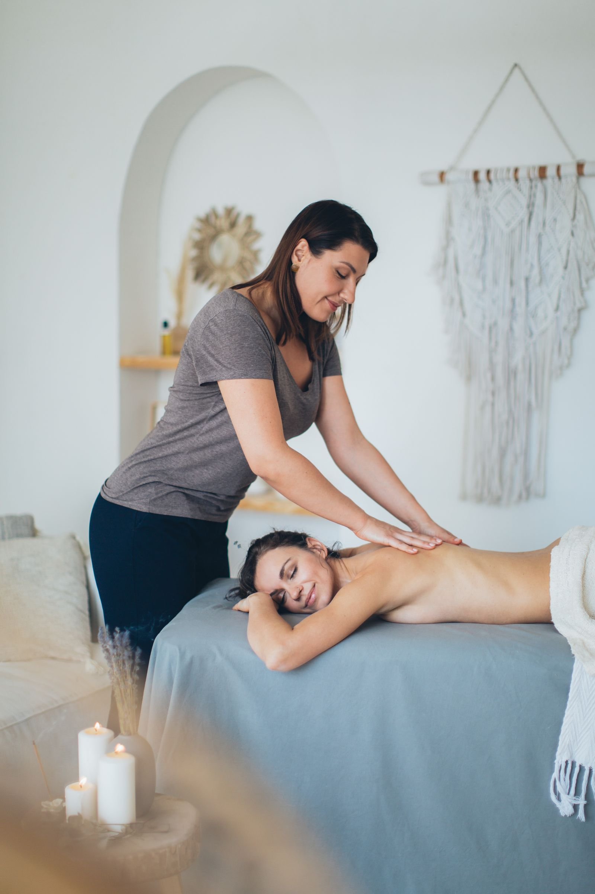

Services at Jax-Zen Healing Arts Center
Float therapy, massage, and wellness in Jackson's Midtown Art District.
Services
Floatation therapy
The listing calls Jax-Zen Mississippi's only dedicated float center.
Massage
Swedish, deep tissue, and hot stone massage.
Reiki
Chakra balancing
Tuning fork therapy
Creative wellness events and workshops
Zen Boutique
Gallery



All gallery photos are stock photos, labeled as such. They show the kind of work and setting described on this page, not this business.
Contact
Call to book: +1 601-691-1697 Email: contact@jax-zen.com
Jax-Zen Healing Arts Center serves Jackson, MS. Questions? Call +1 601-691-1697.